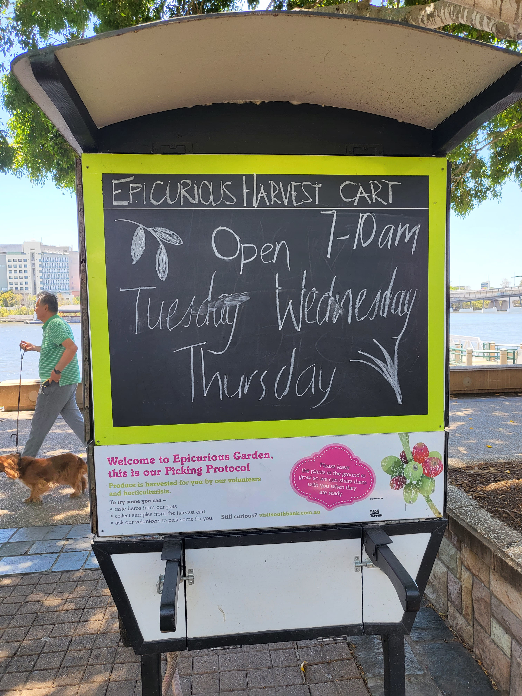

EPICURIOUS GARDEN
Location: Formal Gardens, Clem Jones Promenade near South Bank 3 Ferry Terminal
Hours: Open 24-Hours
Explore all the cool side-quests of the Epicurious Garden!
Like saying hello to the statue!
So many awesome plants, fruits and veggies!
These ones can even grow in water!
Have you ever seen a cherry plant?
Collect the harvested fruits and veggies at this cart for free!
Open 7-10am on Tuesday, Wednesday and Thursday.
Epicurious garden is a community garden so you can take anything you pick home!
But make sure to take only what you need and leave some for everyone to enjoy!